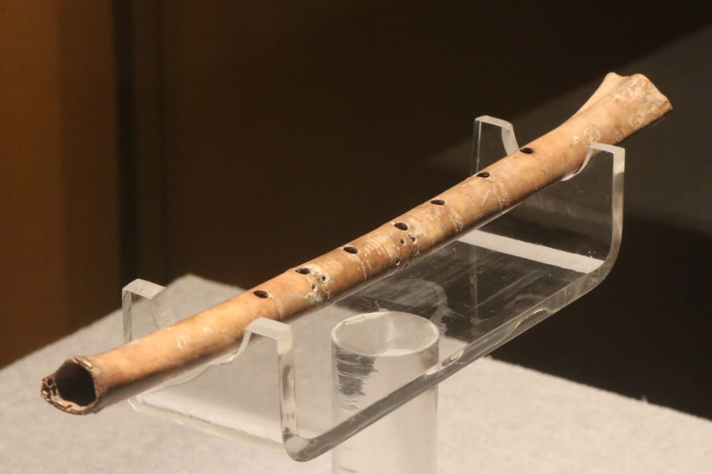

{kind=link}
Las flautas primitivas y de la antigüedad
Las flautas dulces existen desde hace milenios. Es difícil determinar cuándo apareció el antecesor de nuestra flauta travesera moderna, pero es seguro que los dos tipos han existido desde siempre en todos los pueblos. Por tanto, podemos afirmar que es un instrumento universal.La flauta - sea dulce o travesera -, es un instrumento de viento por excelencia como lo indica su nombre, el cual proviene etimológicamente del latín “flatus” (aliento, viento, soplar). Al igual que en el resto de los instrumentos aerófonos, el sonido se produce al poner en vibración una columna de aire. Según el volumen de aire que vibre, la flauta producirá un sonido más agudo o más grave. El mecanismo mediante el cual se regula la longitud de la columna de aire en vibración puede ser de llaves o manual.
En este instrumento, el intérprete se halla más inmediatamente ligado al mismo que otros músicos, pues produce los sonidos con su propio aliento, elemento vital primario. El ser humano se extingue con su “último aliento”, y sus expresiones más inmediatas aparecen derivadas de la transformación del aliento en sonidos: risa, alegría, suspiros…
 En los pueblos primitivos, el material más utilizado para la fabricación de las flautas era el hueso y la caña. Se utilizaron también cuernos de animales como cuerpo de las flautas. En las flautas de cuerno, el orificio se encuentra siempre en el extremo más ancho del mismo. Como el otro extremo está cerrado, al tapar todos los agujeros obtenemos un sonido una octava más baja que la que corresponde al volumen entero del cuerpo, parecido a lo que sucede con los tubos cerrados de un órgano. De ahí que el sonido sea más calmado, más dulce, más “cerrado”.
La música de la antigua civilización egipcia sigue siendo un misterio en la actualidad. Su desarrollo más intenso tuvo lugar en los templos y en su actividad ceremonial, como lo atestiguan textos encontrados para ritos de culto a Isis y Neftis. Al carecer de escritura musical, desconocemos cómo era la música en el antiguo Egipto. La transmisión oral de estos conocimientos ha dificultado mucho la investigación actual. Mediante el estudio de la escritura gráfico-jeroglífica, textos y bajorrelieves, sabemos que los egipcios utilizaban flautas rectas y chirimías dobles (de caña), que consistían en dos tubos paralelos provistos de lengüeta que sonaban al unísono.
Hacia el siglo XVI a.C., el contacto de los egipcios con Mesopotamia contribuyó al desarrollo y asimilación de un nuevo estilo de música oriental de carácter fundamentalmente profano.
En la cultura oriental también se utilizaron instrumentos de viento con diferentes finalidades. Fueron los chinos los que formaron la escala musical denominada “cromática” en la actualidad, descubierta por el maestro de música de Hoan-Ti (antiguo Emperador). En China se construyeron las flautas de Pau (“si-siao”); las flautas de bambú con orificios (“siau” o “yo”), y las flautas traveseras (“ti” o “chou”). En Japón se alcanzó un refinamiento musical superior al chino, predominando la utilización de instrumentos de cuerda punteada y de percusión. En los casos de acompañamiento instrumental, la voz humana y el instrumento no sonaban simultáneamente, sino alternándose.
El carácter de la música de la India está más cercano a la música occidental, siendo sus rasgos más característicos la división cromática de la escala, el predominio del compás ternario y su origen mitológico. En la actualidad se siguen utilizando flautas rectas y traveseras en la música popular.
En Israel también se utilizaron instrumentos de viento pertenecientes a la familia de las flautas. Entre ellos, cabe destacar el “ougob” (citado en el libro del Génesis), la flauta simple (“ugabo tedil”) y el cuerno de carnero "schofar".
La influencia de la cultura egipcia en la Grecia antigua fue enorme. Pitágoras de Samos (c.560-470), que según la tradición se habría iniciado en la ciencia de los egipcios tras sus largos viajes por oriente, fundó una escuela en Crotona, donde él y sus discípulos estudiaron los fenómenos acústicos y musicales.
Se puede considerar a Roma como imitadora de los modelos griegos, puesto que los romanos dedicaron gran parte de sus esfuerzos en el desarrollo y expansión de sus ideales políticos. De hecho, el estudio de la música fue condenado por algunos gobernantes como Tulio Cicerón, considerando que el ejercicio de la misma debía realizarse con moderación. Entre los instrumentos de viento predilectos figuraba la fídula (flauta recta de dos tubos).
Las flautas en la época medieval.
En la actualidad, se tiene la certeza de que la flauta dulce ya existía en la época medieval, utilizándose principalmente en el contexto profano. Se tiene constancia de que este tipo de flauta poseía un repertorio propio, dado que los compositores de esta época empezaban ya a especificar la instrumentación concreta que querían.Debido a la escasa información que se posee, aún en nuestros días sigue siendo complicado hablar sobre la instrumentación en la música medieval.
 Según el musicólogo y flautista inglés Edgar Hunt, la flauta dulce no habría aparecido en Europa hasta
finales del siglo XIV. Gustav Reese, gran estudioso de la música medieval, afirma que durante los siglos XII
y XIII se construyeron flautas dulces de 6 agujeros. Recomendamos a nuestros lectores observar los
instrumentos musicales que aparecen esculpidos en diferentes pórticos medievales de Galicia. En el “Pórtico
de la Gloria” de la Catedral de Santiago de Compostela no hay ni rastro de la existencia de instrumentos de
viento. En los pórticos de Puerto Marín y de la Catedral de Orense, López Calo ha querido ver dos ancianos
tocando flautas dobles, aunque es difícil determinar si realmente se trata de flautas o de otro tipo de
instrumentos de viento.
Según el musicólogo y flautista inglés Edgar Hunt, la flauta dulce no habría aparecido en Europa hasta
finales del siglo XIV. Gustav Reese, gran estudioso de la música medieval, afirma que durante los siglos XII
y XIII se construyeron flautas dulces de 6 agujeros. Recomendamos a nuestros lectores observar los
instrumentos musicales que aparecen esculpidos en diferentes pórticos medievales de Galicia. En el “Pórtico
de la Gloria” de la Catedral de Santiago de Compostela no hay ni rastro de la existencia de instrumentos de
viento. En los pórticos de Puerto Marín y de la Catedral de Orense, López Calo ha querido ver dos ancianos
tocando flautas dobles, aunque es difícil determinar si realmente se trata de flautas o de otro tipo de
instrumentos de viento.
El musicólogo, compositor y flautista virtuoso austriaco René Clemencic (Viena, 27/02/1928), sostiene que las dobles flautas se utilizaban en la música culta europea (y aún hoy en el folklore eslavo) hasta la época del renacimiento, como última reminiscencia del bordón medieval e incluso de tiempos aún más antiguos. A veces se confeccionaban especialmente estas dobles flautas; otras veces, el músico tocaba simultáneamente dos flautas. Sirva como ejemplo para nuestros lectores el ángel que puede observarse en la entrada sur de la Catedral de Toledo (siglo XV) tocando una doble flauta dulce.
Es necesario apuntar que, según autoridades en la materia, como el ya citado Dr. René Clemencic, el número de agujeros de una flauta durante el medievo no está determinado. De la misma manera, algunas flautas tienen un agujero dorsal para el pulgar y otras, no.
En la Edad Media, el material utilizado para la fabricación de estos instrumentos era muy diverso: hueso, madera, caña, cerámica, metal… Un elemento común de estas flautas es que están hechas de una sola pieza, en forma de tubo cilíndrico o ligeramente cónico. Su sonido puede ser dulce y encantador, pero también agudo, agresivo y cortante.
Con el desarrollo de movimientos musicales tan ricos e interesantes durante el medievo como el de los juglares y los trovadores, los nobles y reyes de Europa no se sienten infravalorados por trovar – componer y cantar – en letra y música. Sirva como ejemplo en España el rey Alfonso X el Sabio de Castilla y León (Toledo, 1.230 – Sevilla, 1.284). Por su madre conocía el repertorio de los cantores alemanes, y en su corte se reunieron trovadores provenzales (actual Francia) y gallegos, juglares castellanos, músicos judíos y musulmanes. Alfonso X, que proporcionó un impulso extraordinario a las artes y las ciencias, compuso junto a sus colaboradores cortesanos las cuatrocientas Cantigas de Santa María. Estas Cantigas están escritas en gallego, idioma entonces de la poesía lírica. Esta bella música se interpretaba vocalmente a solo y con acompañamiento de instrumentos muy variados, entre los que destacan las flautas (dulces y traveseras).
Las primeras representaciones iconográficas que existen de flautas dulces se encuentran en Cataluña. Concretamente, se trata de una Virgen con el Niño (retablo de la Iglesia de Santa Clara, Barcelona) y de seis ángeles músicos (retablo del Monasterio de Sant Cugat del Vallés), pintados hacia el año 1.390. Ambas obras se atribuyen al taller del barcelonés Pere Serra.
Actualmente, se conservan dos ejemplares de flauta dulce de valor organográfico incalculable: son las flautas medievales de “Dordrecht” y “Würzburg”. La “flauta de Dordrecht” se encontró en la localidad holandesa del mismo nombre en el año 1.940, y se conserva actualmente en el “Gemeentemuseum” de La Haya. Se trata de una flauta soprano afinada en do3, con un diapasón extraordinariamente alto (la3 = 460 Hz aprox.), casi un semitono por encima del actual (la3 = 440.44 Hz), más propio de muchos países europeos durante el renacimiento.
La prueba del Carbono 14 determinó que, en efecto, se trataba de una flauta medieval. El organólogo inglés Holles Philspatrich aventuró con mayor precisión que dicha flauta pudo ser construida hacia mediados del siglo XIII. Su estado de conservación es bueno, teniendo en cuenta que dicha flauta había estado enterrada en el fango de la fosa de un castillo habitado entre los años 1.335 y 1.418. La “flauta de Dordrecht” tiene una longitud de 29 centímetros, está construida probablemente en madera de olmo, y su tubo es extraordinariamente estrecho. Posee ocho agujeros en la parte delantera y uno doble en la parte trasera para el dedo pulgar, lo cual era usual en esta época. Esta peculiaridad del agujero dorsal permite invertir la posición de las manos. Exceptuando algunos sonidos graves, la flauta original no suena. Se han realizado copias fieles que nos permiten constatar que la sonoridad de la “flauta de Dordrecht” era fuerte y áspera, con una extensión que supera las dos octavas que se conseguían con posiciones de los dedos similares a las que describía Sebastian Virdung en 1.511. Morfológicamente, es interesante señalar que esta flauta poseía un pabellón y una embocadura de un material diferente al del resto del instrumento.
La “flauta de Würzburg” fue encontrada a finales de la segunda Guerra Mundial en la localidad alemana de Würzburg, y sólo se conserva parcialmente. El fragmento hallado corresponde al tercio inferior del instrumento (una tercera parte), y lo más sorprendente son las grandes analogías entre esta flauta y la de Dordrecht, observadas a raíz de los intentos de reconstrucción de ambos instrumentos que se han realizado. Existe la posibilidad de que se trate de un instrumento parcialmente cerrado en el extremo inferior, al igual que ocurre con otros instrumentos folklóricos de Marruecos y oriente próximo, lo que determina un tipo de sonoridad bastante diferente al de las flautas uniformemente cilíndricas.
En el siglo XV, la flauta de cuerno se denominaba trompa de gamuza y, como las otras flautas dulces, se agrupaba por familias (soprano, tenor, alta y bajo).
El “galoubet” es una flauta dulce cilíndrica que se encuentra en numerosos países europeos desde la Edad Media, aunque el término data de 1723. El modelo más utilizado en Provenza (Francia) es el afinado en Si natural, llamado “tono de San Bernabé”. Esta flauta con boquilla provista de tres agujeros (dos superiores y uno inferior) permite la ejecución sólo con la mano izquierda, mientras que con la mano derecha se puede tocar el tamborín. A pesar de la poca cantidad de agujeros, el “galoubet” puede tener una extensión de una octava y media. Haciendo variar la intensidad del soplo, se pueden obtener varias notas con una sola posición de los dedos. Los sonidos que faltan se obtienen soplando por debajo, lo cual confiere al instrumento un timbre extraño y aéreo.
El largo total de un “galoubet” en el “tono de San Bernabé” es de aproximadamente 36 cm. Las maderas más utilizadas para su fabricación son ébano, boj, palisandro y olivo.
Las flautas en el renacimiento.
La época renacentista marca un punto de inflexión en la concepción de la interpretación musical con flauta, puesto que es el periodo en el que los constructores, siguiendo los avances en física acústica que se iban produciendo, comienzan a fabricar flautas dulces y traveseras agrupadas por familias cada vez más ricas y variadas.De manera general, pueden distinguirse las siguientes tesituras, de la más aguda a la más grave: exilent, sopranino, soprano, contralto, tenor, bajo, contrabajo y subbajo (poco usual). Las medidas tienden a ser cada vez más homogéneas en este periodo, aunque siempre pueden existir variaciones entre constructores. Un buen ejemplo de ello lo encontramos en la gran flauta contrabajo del Museo de Verona (2,85 m de longitud), en contraposición a la pequeña flauta sopranino en fa del “Kunsthistorisches Museum” (Museo Histórico de Arte) de Viena.
Para obtener la nota más grave producida por una flauta y conocer así su afinación, es necesario tapar todos los agujeros de la misma. Además, las flautas se encuentran afinadas una octava más aguda que la tesitura humana correspondiente. De esta manera, la nota más grave que emite una flauta exilent es el do4. La nota más grave emitida por una flauta sopranino es un fa3, mientras que la flauta soprano emite un do3. Si alternamos sucesivamente en orden descendente las notas “fa” y “do” según las octavas, obtendremos que la nota más grave emitida por una flauta contralto es un fa2, por una flauta tenor es un do2, por una flauta bajo es un fa1 y por una flauta subbajo es un do1.
Del período comprendido entre 1.530 y 1.650, se conservan aproximadamente 150 ejemplares de diferentes flautas dulces. Ello nos da una idea de la popularidad que adquirió este instrumento durante la época del renacimiento. En los Museos de París, Frankfurt, Verona, Nüremberg, Viena y Bruselas pueden encontrarse magníficas colecciones de flautas.
La flauta dulce del renacimiento es generalmente de una pieza y recta, en forma de bastón. Sólo la boquilla y el pabellón están ligeramente marcados. Sus paredes son espesas, casi cilíndricas y muy vaciadas. La boquilla suele ser bastante larga con un orificio estrecho. El sonido es pobre en agudos, graso y redondo.
En el renacimiento, las flautas dulces se encontraban muy extendidas por toda Europa, existiendo colecciones en las principales casas reales del continente, así como en la alta aristocracia. En Inglaterra, la corte de Eduardo VI contaba con cinco flautistas. En 1.603, año del fallecimiento de Isabel I, se sabe que en sus funerales iban a tocar siete instrumentistas de flauta dulce y otros siete de flauta travesera. Enrique VIII, durante su juventud, tocaba el virginal, la flauta dulce y la flauta travesera, además de practicar el canto y de bailar. La corte inglesa disponía a la muerte de este monarca de una colección de 72 flautas traveseras y 76 flautas dulces.
El conde Fugger, aristócrata y banquero alemán, poseía una colección de 227 instrumentos de viento en el siglo XVI, de entre los cuales 111 eran flautas dulces. La corte de Stuttgart poseía 507 instrumentos de viento en el año 1.589; colección en la que se incluían 299 flautas dulces.
En España, Isabel la Católica ordenó realizar un inventario al Alcázar de Segovia en el año 1.503. Así se sabe que su corte disponía de tres chirimías (flauta de seis agujeros análoga al clarinete) y de una flauta de boj con guarniciones de latón dentro de una funda de cuero, además de otras dos flautas de boj. Según el inventario de Felipe II, en su corte existían siete flautas de madera de Alemania, grandes y pequeñas: una flauta bajo muy grande de madera de boj con guarniciones metálicas, una flauta contrabajo y otra bajo de madera de boj con guarniciones de latón y tudel del mismo metal, además de seis pífanos (los cuatro más pequeños, con embocadura de plata dorada, pertenecían a la reina María)
En el renacimiento, las flautas se utilizaban básicamente en grupo, así como en conjuntos instrumentales (“Consort”) Las flautas dulces pensadas para tocar polifónicamente tenían una extensión de una octava y una sexta, aunque durante la época renacentista existieron flautas con una extensión que superaba las dos octavas y media, una tesitura superior inclusive a las de las flautas barrocas.
Generalmente, la música compuesta para estos conjuntos instrumentales renacentistas no especificaba qué instrumentos deberían ser utilizados. Existen excepciones, como la del francés Pierre Attaingnant (1.494 – 1.551/2), que en el año 1.533 indicaba qué canciones a cuatro voces podían ser interpretadas con flautas dulces y cuáles no. Tielman Susato (c.1.500 – 1.561/4) en 1.551 y Anthony Holborne (c. 1.584 – 1.602) en 1.599 escribieron una serie de danzas para instrumentos de cuerda.
El italiano Dario Castello fue un genial compositor para flauta dulce renacentista, como lo acredita su “Sonata prima a Soprano solo”, que además puede ser interpretada por cualquier otro instrumento en tonalidad de soprano. Se trata de una obra llena de inquietud, de manierismo tardío, y a la vez audaz y apasionada. Puede ser tocada con el acompañamiento de un órgano o de un clave: (“per sonar nel Organo ovvero Clavicembalo”)
Hacia finales del siglo XVI y comienzos del siglo XVII, la flauta dulce ya aparece especificada en las partituras. Un buen ejemplo de ello son los “consort lessons” de Thomas Morley (1.557 – 1.602) fechados en 1.599, además de una “sonata para tres flautas y órgano” (c.1.620). Se ha de destacar la composición de una “sonatella a 5 flauti et organo” del italiano Antonio Bertali (1.605–1.669) y una “sonata a 7 flauti” de J. Schmelzer (1.623 – 1.680)
Heinrich Ignaz Franz von Biber (1644-1704), virtuoso violinista bohemio que actuó en la corte episcopal de Olmutz y en la arzobispal de Salzburgo, así como en la del rey de Baviera, escribió una “sonata pro tabula a 10” para cinco flautas dulces y cinco instrumentos de cuerda con bajo continuo.
En Holanda sobresale la figura del hábil organista y flautista ciego Jacob van Eyck (c. 1.590 – 1.657), quien publica en 1.646 “Der Fluyten Lust-hof”, obra que contiene alrededor de ciento cincuenta piezas – la mayoría de ellas con variaciones -. Algunas de ellas son para dos flautas, añadiendo una parte didáctica donde se muestra una flauta dulce en do y una travesera en sol.
El gran cambio en la construcción tanto interna como externa de la flauta dulce no se va a producir hasta finales de la segunda mitad del siglo XVII. La familia Hotteterre, integrada por músicos, compositores y constructores de instrumentos – particularmente de viento -, comienzan a perfeccionar el oboe, la flauta dulce y la flauta travesera, incrementando el número de partes de la flauta dulce de dos a tres. Se utilizan fragmentos de madera más pequeños y de mejor calidad. Asistimos a la transición que nos conduce a la época barroca, donde la flauta dulce es la gran protagonista.